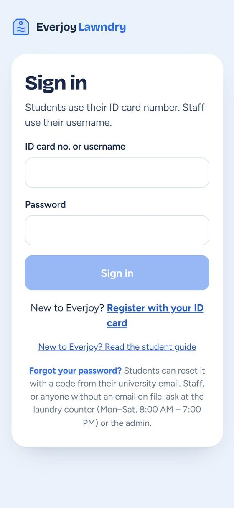
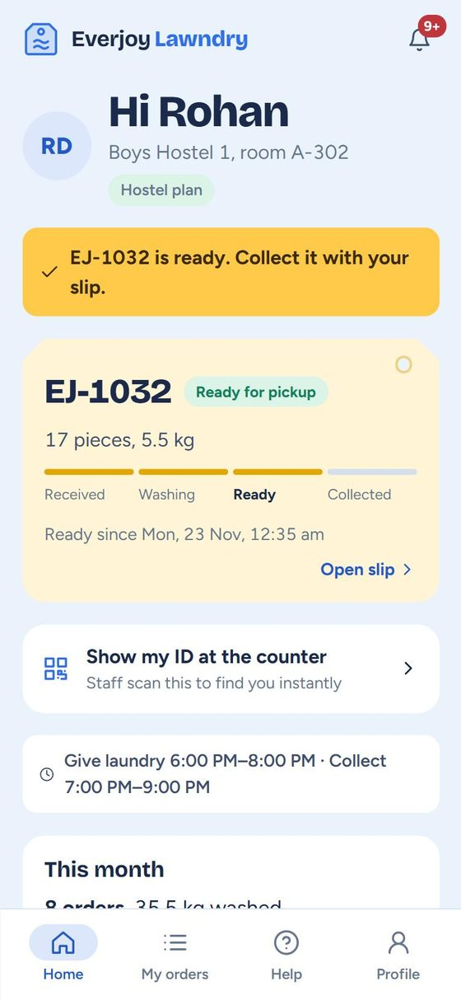
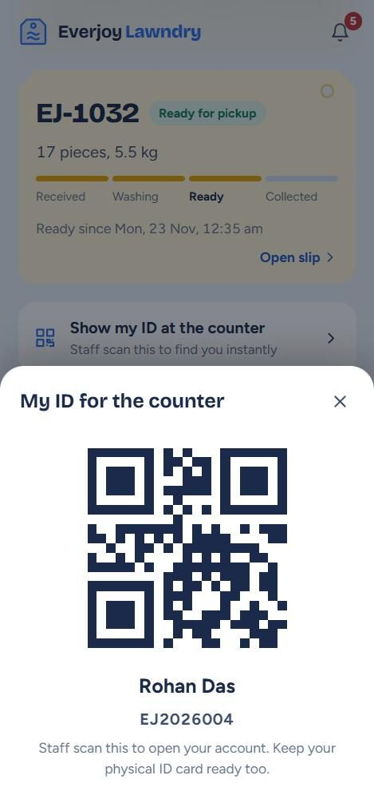
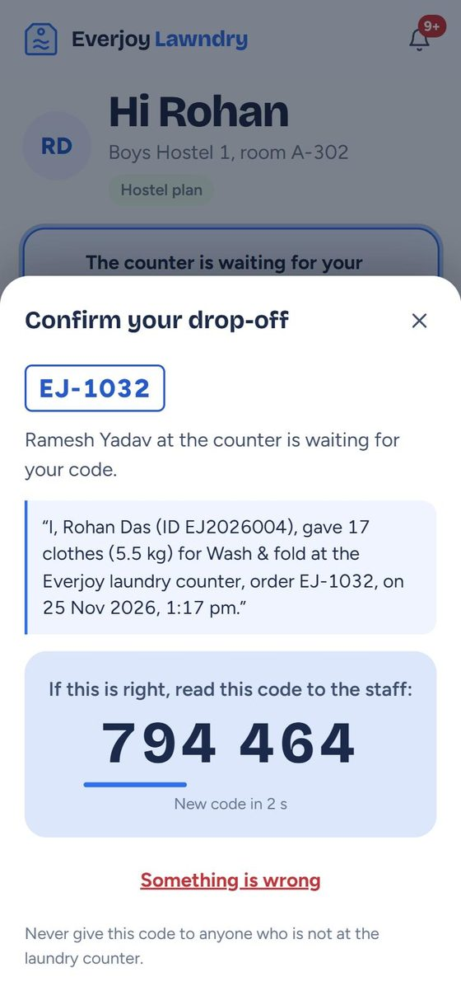
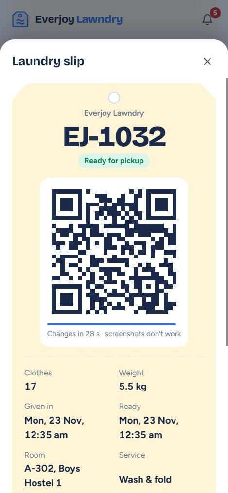
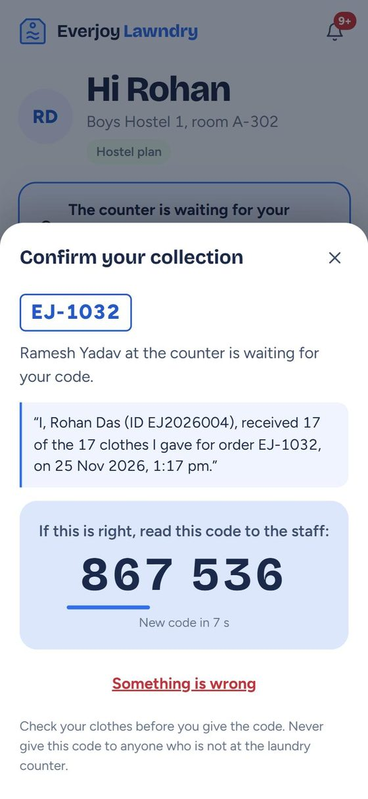
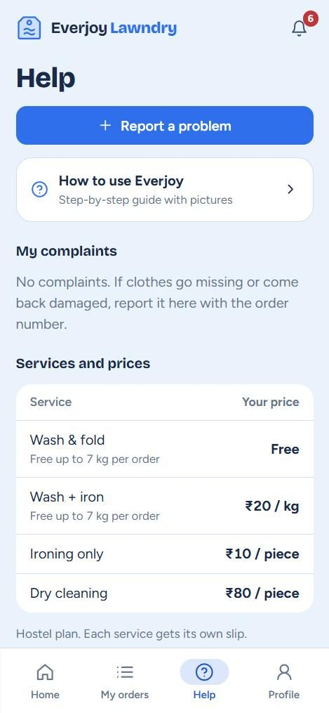
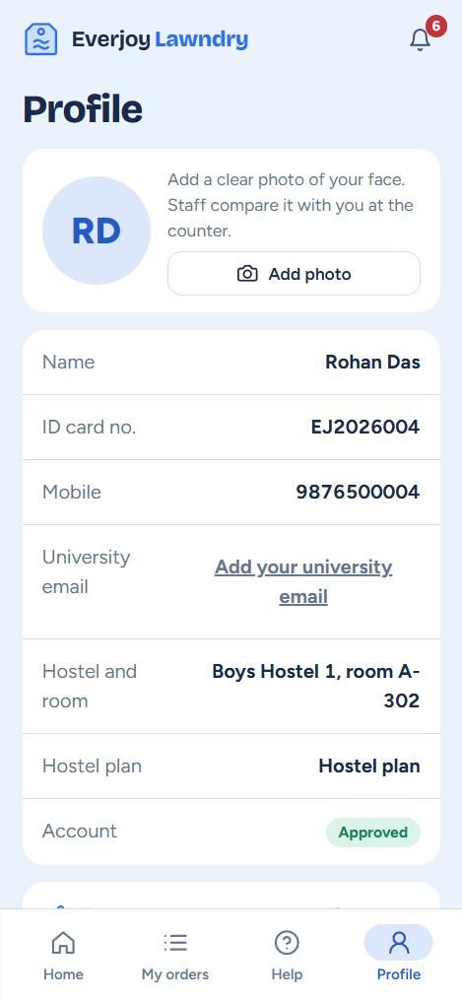

Your laundry, without the paper slip.
Everjoy replaces the register book and the paper slip. You give your clothes at the counter, confirm on your phone, follow the washing, and collect with a QR code. This guide shows each step.
- How an order travels
- Create your account
- Your Home screen
- Giving laundry
- Confirming your drop-off
- Your digital slip
- Collecting your clothes
- Paying
- Problems and complaints
- Profile and password
- Questions
How an order travels
Every order goes through the same five steps. You confirm twice, with a code on your phone: when you give your clothes and when you get them back, like signing the old register.
Create your account
You need your university ID card and your university email.
- Open Everjoy (the app, or the website on your phone) and tap Register with your ID card.
- Fill in your ID card no., name, mobile, university email, hostel and room. Choose a password.
- Type the 6-digit code we email to your university address.
- Add a clear photo of your face (Profile). Staff compare it with you at the counter.
- Take your ID card to the counter. Staff check it on the university portal and approve you. That's it.

Sign in with your ID card no.
Your Home screen
Everything you need is on Home.

Home: confirm cards on top, your laundry below
Giving laundry
- Go to the counter in the drop-off hours shown on Home.
- Show your ID card or tap Show my ID so staff find you.
- Staff choose the service, weigh your clothes and count every piece. They hang a numbered basket card (like A256) on your basket.
- Your digital slip appears on your phone, and a code pop-up asks you to confirm (next step).

Show my ID: staff scan this
Confirming your drop-off with a code
This replaces signing the register. It proves you were at the counter and agreed to the count.
- Right after staff take your order, a pop-up opens on your phone: “I gave 8 clothes (3 kg) for Wash & fold, order EJ-1037, basket card A77.”
- Check it. If it's right, read the 6-digit code to the staff member. They type it in, and it's confirmed.
- The code changes every 30 seconds, so only someone standing at the counter with your phone can give it.
- If something is wrong (for example you gave 9 clothes), tap Something is wrong and write what. The counter sees it straight away and the office gets a complaint.

Read this code to the staff
Your digital slip
Tap a laundry tag on Home to open its slip.
- The QR code changes every 30 seconds. A screenshot or photo of it won't work, so nobody else can collect your clothes.
- The slip shows clothes, weight, service, when it's ready, the amount to pay, and what you confirmed.
- Use Report a problem with this order at the bottom if something is wrong.

Your slip with the changing QR
Collecting your clothes
- When your laundry is ready you get a notification. Come in the collection hours.
- Open your slip and show the QR (or tell staff your basket card no. and show your ID card).
- Staff count your clothes back and press Hand over. Check your clothes.
- A pop-up opens on your phone: “I received 17 of the 17 clothes…” If it's right, read the code to the staff. They type it in and the hand-over is complete.

Give the code only after checking
Paying
Most hostel orders are free. You pay only for extra kg, paid services or if your hostel plan has ended.
- The amount due shows on Home and on the slip.
- Tap Pay by UPI to see the laundry's QR, pay with any UPI app, and show the payment screen at the counter. Cash works too.
- Staff mark it paid. Usually you pay before you collect.

Help: prices, complaints and this guide
Problems and complaints
- Open Help → Report a problem.
- Choose the order, what went wrong (missing, damaged, wrong count…), describe it and add a photo if you can.
- Follow the replies in Help. You get a notification when the office answers.

Profile
Profile and password
Questions
Why do I have to give a code?
It's your signature in the register. It records exactly what you gave and got back, with the time, and proves you were there. If clothes go missing, it shows what was agreed. Nobody can change it afterwards.
I gave the code by mistake.
Report a problem on that order in Help straight away and explain. The office checks it.
My phone is dead or has no internet.
The code is made on your phone, so weak Wi-Fi is fine once the pop-up has opened. If your phone is off, ask the counter: only the admin can complete it without the code, and writes down why.
Can a friend collect for me?
No. Collection needs your changing slip QR or your ID card, and the code on your own phone.
The code was not accepted.
Codes change every 30 seconds. Read the newest one. After 5 wrong tries, staff send you a fresh code.
When will my laundry be ready?
The slip shows the expected time. It usually becomes ready at the start of collection hours, a set number of days after you give it.
Everjoy Lawndry · Questions the guide doesn't answer? Ask at the counter.